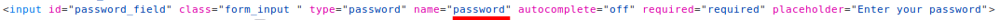

http-post-form
Login page
In the HTML code of a login page usually we find:
•
<form> tag is used to create an HTML form for user input. The attributes of this tag in which we are interested are:
| Attribute | Value | Description |
|---|
| method | get
post | Specifies the HTTP method to use when sending form-data |
| action | URL | Specifies where to send the form-data when a form is submitted |
◇
<input> tag specifies an input field where the user can enter data. These elements are used within a <form> element
The attributes of this tag in which we are interested are:
| Attribute | Value | Description |
|---|
| name | text | Specifies the name of an <input> element |
Hydra
Syntax:
hydra <server> http-post-form "<url>:<usernameParameter>=^USER^&<passwordParameter>=^PASS^:<condition string>" -L <userList> -P <passwordList> -V -f
•
<server> → is the target: DNS, IP or 192.168.0.0/24 (this or the -M option)
•
http-post-form → is the
service that in this case we want to crack
•
url → url where the form of the application redirect(we can find it also in the parameter action of the <form> element)
•
<usernameParameter>=^USER^
&<passwordParameter>=^PASS^
→ usernameParameter and passwordParameter are the name parameters used for username and password within the form input. While ^USER^ and ^PASS^ are placeholder used by Hydra to know where usernames and passwords that we want to try have to be inserted
•
condition string → pattern string that hydra search in the response to check if a login is invalid(default) or valid
Invalid condition login check (default) is preceded by
F= → when hydra tries an username and password, if the response contains the string specified, the login credentials used are marked as
invalid Successful condition login check is preceded by
S= → when hydra tries an username and password, if the response contains the string specified, the login credentials used are marked as
valid•
-f → tells to hydra to exit after the first found login
•
|& tee output.txt → the output will be displayed on the screen and also redirected on file
example 1:hydra 10.125.211.99 http-post-form "/login.php:email=^USER^&password=^PASS^:F=wrong credentials!" -L users.usr -P password.txt -V |& tee output.txtexample 2:hydra 10.125.211.99 http-post-form "/login.php:email=^USER^&password=^PASS^:S=Welcome!" -L users.usr -P password.txt -V |& tee output.txtcommand to see which are the valid credentials saved in the output file:
cat output.txt | grep http-post-form